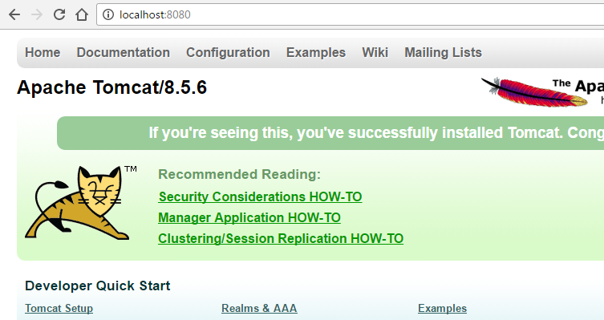

Lab - Test Apache Tomcat
- 45 minutes
- Hello World HTML file
- 404 Error
- Edit port configuration
- Hello World JSP file
Start the Web Server
1. Use the command line (cmd on Windows) or terminal (terminal on Mac OSX) to navigate to the ‘bin’ folder in apache\apache-tomcat-8.X.X.
Windows Hint: Use the command cd to change directories, and dir to list what’s in the current directory
2. To start the Apache Tomcat web server, run the startup.bat file (Windows) or sh startup.sh (Mac)
3. Open a web browser and visit http://localhost:8080/
You should see a web page that looks like the following:

Find the Default File
4. Navigate to the apache\apache-tomcat-8\webapps\ROOT folder.
This is the base directory of hosted web files on Apache Tomcat. Any web page hosted by this server will need to live somewhere inside this ROOT folder.
On most web servers, the default file that is returned when visiting a server’s address (http://localhost:8080/) is named something like ‘index’ or ‘default’, and it lives in the ROOT folder itself (and not a subfolder).
5. Locate the index file (index.jsp) and open it in a text editor. Scroll up and down and take a look at its contents.
You should see a combination of HTML and Java Scriptlets (code contained inside of <% and %> tags)
Make a new Default File
6. Create a new file called index.html that displays the sentence “This web server belongs to me now!” and save it in the ROOT folder.
7. Try visiting http://localhost:8080/ again. What happened?
You should see your index.html page is served now, and not the index.jsp page!